창원·마산·진해 우정사진 — 다섯 친구, 다섯 가지 표정
2026-10-20 발행
우정사진은 가족사진과 다릅니다. 가족은 혈연으로 묶여 있지만 친구는 스스로 고른 사이입니다. 그래서 다섯이 한자리에 모이는 일부터가 쉽지 않습니다. 누군가는 아이를 맡겨야 하고, 누군가는 일을 마치고 달려와야 합니다. 그렇게 시간을 맞춰 모인 사람들이 같은 옷을 입고 나란히 서면, 촬영장 공기가 조금 달라집니다.
창원에서 우정사진을 찍으러 오시는 분들을 보면 대개 이렇게 말합니다. "이 나이에 이런 거 찍어도 되나." 됩니다. 오히려 지금 찍어야 합니다. 서른의 얼굴, 마흔의 얼굴, 쉰의 얼굴은 다 다릅니다. 그중 한 장을 남겨 두면 십 년 뒤에 그 얼굴을 다시 만나게 됩니다.

우정사진을 잘 찍으려면 한 가지를 먼저 정해야 합니다. 오늘 무엇을 할 것인가. 같은 옷을 입고 정면을 보는 사진만 열 장 찍으면, 열 장이 아니라 한 장입니다. 보는 사람도 금방 지칩니다. 그래서 촬영 전에 의상과 컨셉을 나눠 둡니다. 체육복 같은 편한 옷, 웨딩드레스, 블랙 드레스, 한복 느낌까지. 옷이 바뀌면 표정도 바뀌고, 표정이 바뀌면 사진이 달라집니다.
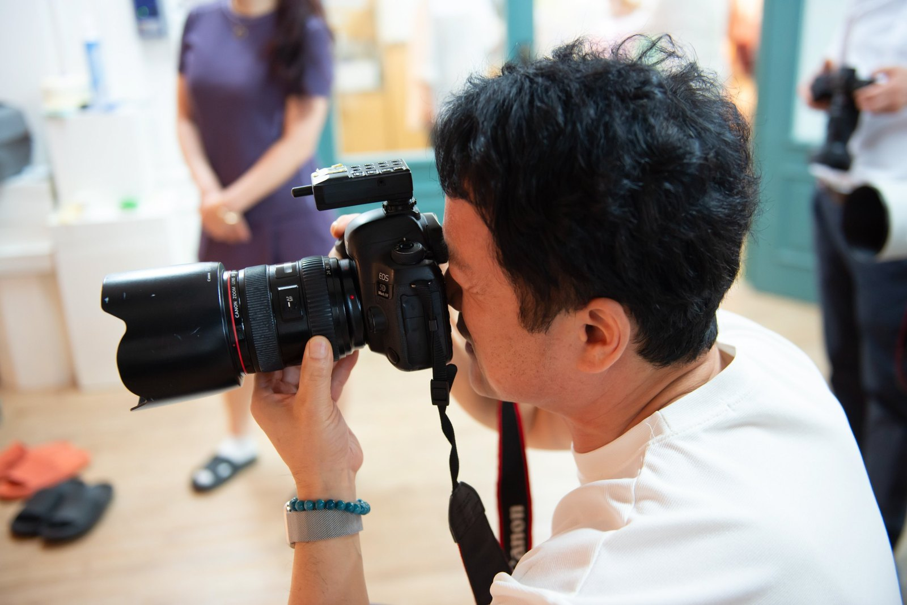
김작가는 촬영 내내 카메라에서 눈을 떼지 않습니다. 몸을 낮추고, 옆으로 돌고, 손을 들어 방향을 잡아 줍니다. 말로 설명하는 것보다 직접 서 보는 편이 빠릅니다. 채를 어깨에 걸고, 다리를 벌리고, 고개를 드는 시늉을 합니다. 다섯이 그 모습을 보고 따라 하다가 또 웃습니다. 웃음이 나오면 그다음 컷은 쉽습니다.
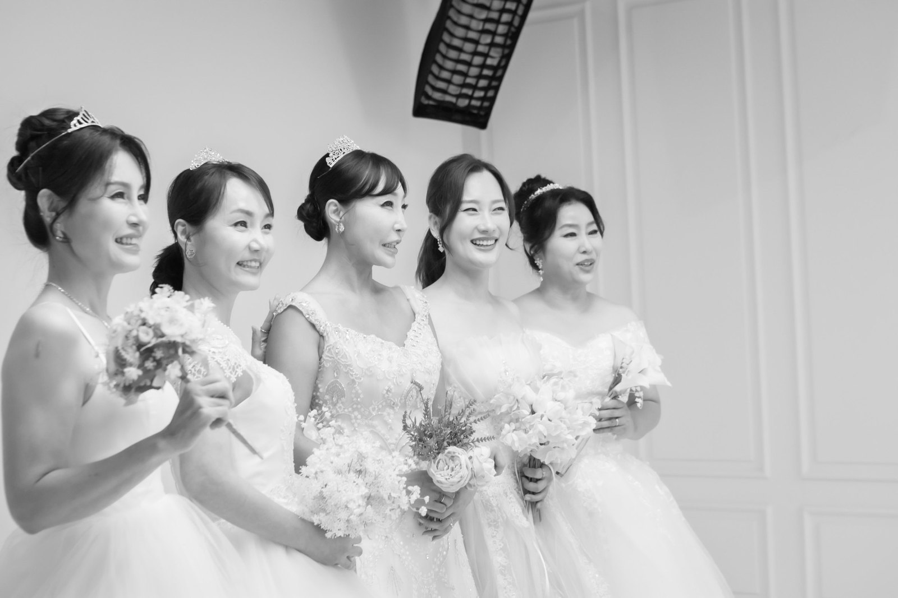
의상을 여러 벌 준비하는 이유가 여기 있습니다. 드레스를 입으면 등이 펴지고, 체육복을 입으면 어깨에 힘이 빠집니다. 같은 사람인데 사진 속 사람은 다릅니다. 우정사진을 의뢰하실 때 "옷은 두어 벌"이라고 말씀하시면, 저희가 그 조합에 맞춰 배경과 조명을 미리 준비합니다.
다섯이 함께 서면 구도도 달라집니다. 셋은 쉽습니다. 다섯부터는 누가 어디에 서느냐로 실랑이가 납니다. "너 키 커서 뒤로 가." "아니야, 나 앞에 설래." 김작가는 그 소리를 말리지 않습니다. 오히려 그 시간을 사진에 담습니다. 결국 자리는 스스로 정해집니다. 친구들끼리 정한 자리가 제일 자연스럽습니다.
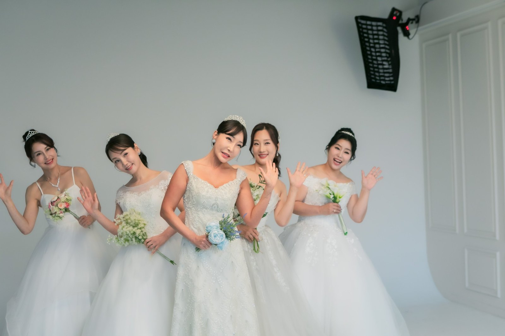
포즈는 정해 주지 않는 편이 좋습니다. 대신 방향만 알려 줍니다. "서로 봐 주세요." "한 명만 웃어 보세요." "지금 그 이야기 다시 해 보세요." 그러면 저마다 다른 표정이 나옵니다. 다 같이 웃는 사진은 한 장이면 충분하고, 나머지는 조금씩 달라야 합니다.
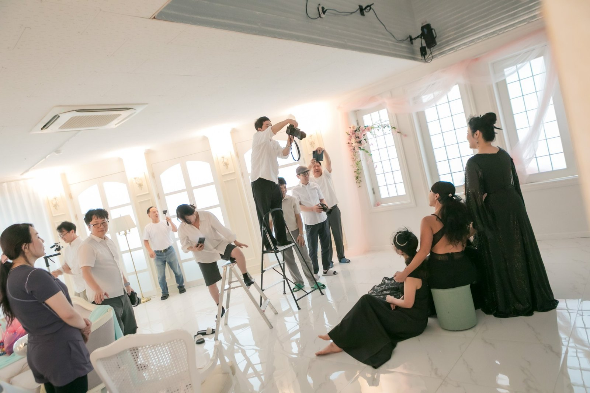
촬영장에는 스태프가 함께 있습니다. 조명을 잡고, 옷자락을 정리하고, 뒤에서 손을 흔들어 웃음을 유도합니다. 촬영장에 사람이 많으면 긴장될 것 같지만 반대입니다. 웃는 사람이 많으면 웃음이 옮습니다. 다섯 친구는 스태프와 눈이 마주칠 때마다 또 웃었습니다.
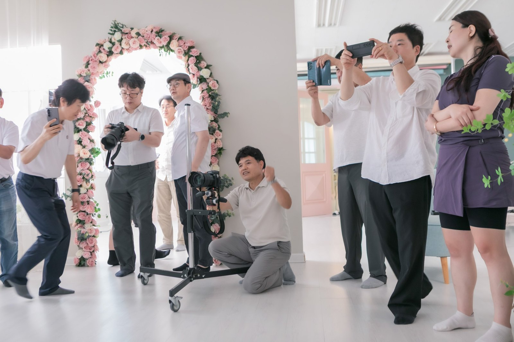
우정사진을 찍으러 오시는 분들은 창원은 물론 마산과 진해에서도 옵니다. 마산에서 오시면 차로 이십 분 남짓, 진해에서 오시면 삼십 분 정도입니다. 상남동 롯데빌딩 2층이라 지하 주차장에 차를 두고 올라오시면 됩니다. 멀리서 오시는 분들은 촬영 시간을 조금 넉넉하게 잡아 두시길 권합니다. 오는 길에 이야기가 더 많아지기 때문입니다.
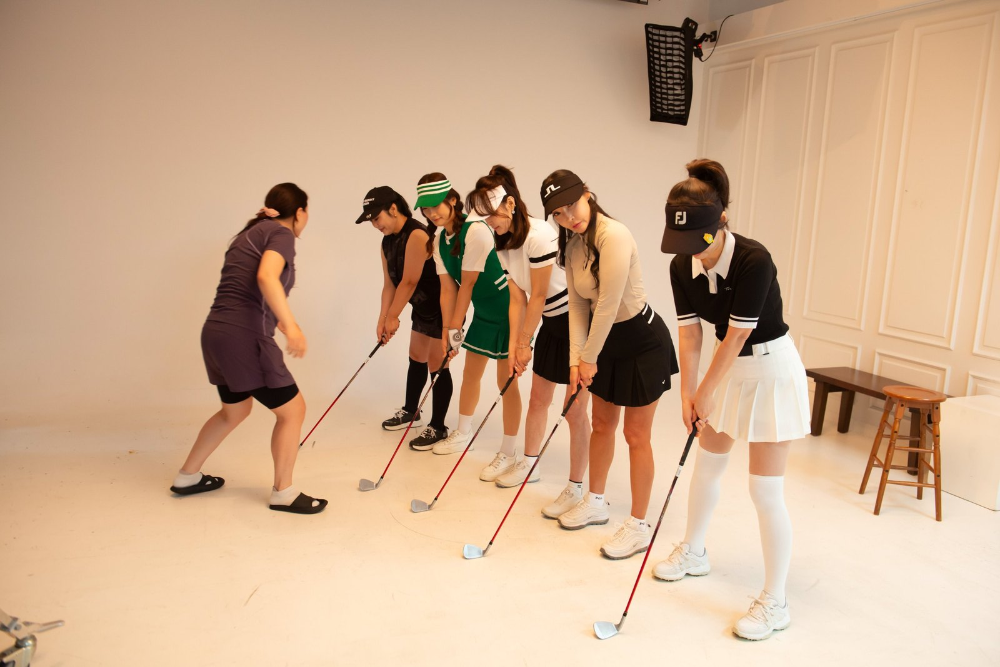
소품은 생각보다 큰 힘을 냅니다. 골프채, 풍선, 꽃다발, 의자 하나. 손에 뭔가 들면 어색함이 사라집니다. 이날은 풍선이 등장하자마자 다섯이 아이처럼 변했습니다. 풍선을 머리 위로 올리고, 얼굴을 가리고, 서로 던지고. 그 장면은 연출이 아니라 그냥 놀이였습니다.
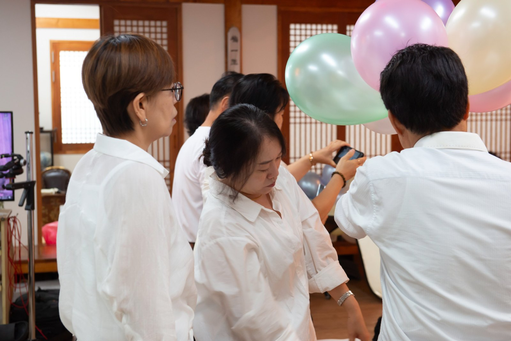
김작가는 셔터를 누르기 전에 자주 기다립니다. 오 분, 십 분도 기다립니다. 표정이 완성되는 순간이 따로 있기 때문입니다. 처음 웃을 때는 입꼬리가 올라가지만 눈은 아직 웃지 않습니다. 조금 지나면 눈까지 웃습니다. 그 순간을 잡으려고 기다리는 것입니다. 기다리는 동안에도 말은 계속 겁니다. 사진은 대화의 결과물입니다.
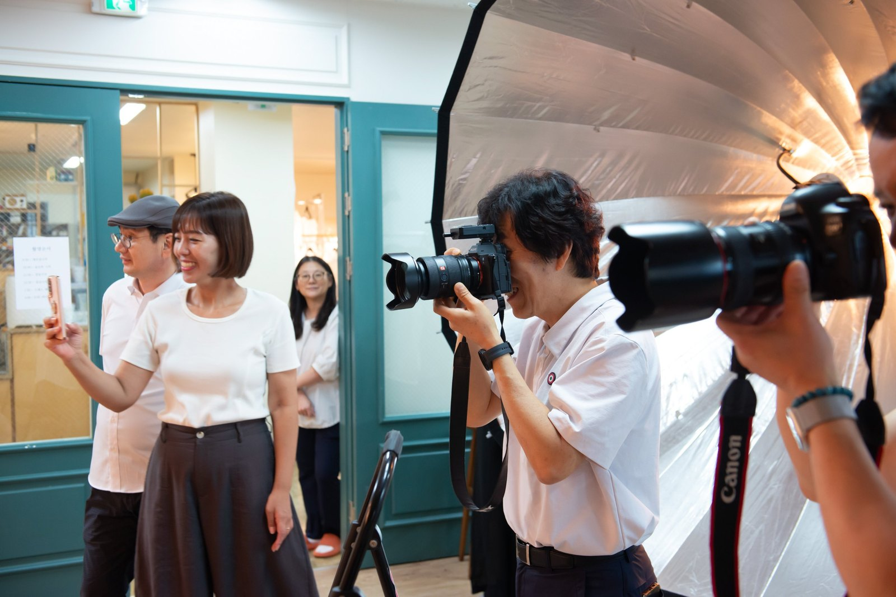
이날 촬영은 한 가지 컨셉으로 끝나지 않았습니다. 체육복으로 시작해 드레스로, 다시 블랙 드레스로, 마지막에는 붉은 드레스까지. 옷을 갈아입을 때마다 사진의 시대가 바뀌었습니다. 스무 살 같기도 하고, 서른 같기도 하고, 결혼식장 같기도 한 하루였습니다.
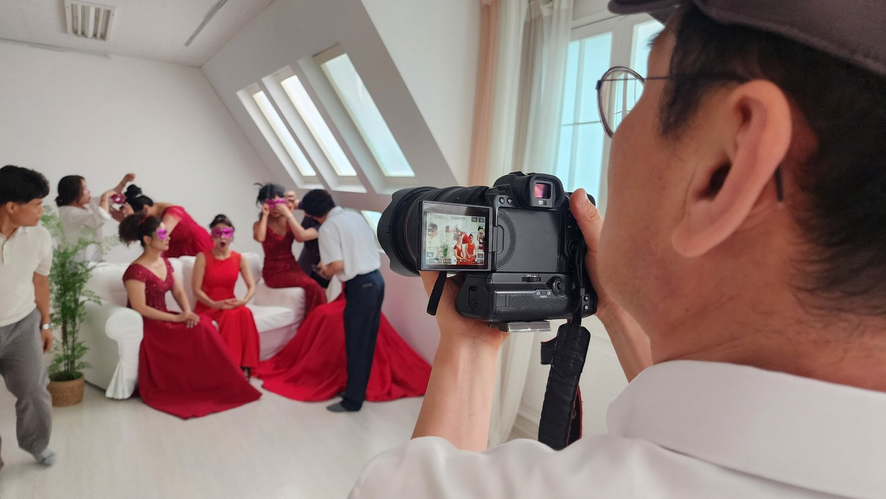
촬영은 한 시간에서 한 시간 반 정도 걸립니다. 다섯 명이면 조금 더 걸릴 수 있습니다. 옷 갈아입고, 웃고, 자리 바꾸는 시간까지 포함하면 두 시간을 잡아 두시는 편이 마음 편합니다. 컨셉을 두세 가지로 나누면 시간은 조금 더 걸리지만, 그만큼 사진이 남습니다.
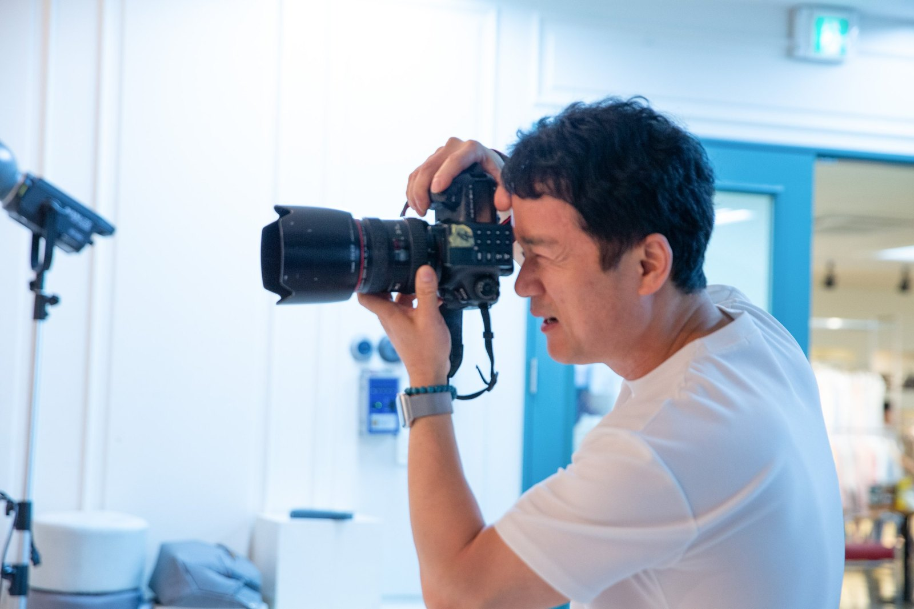
촬영이 끝나면 사진을 고릅니다. 다섯 명이 함께 앉아 모니터를 봅니다. 여기서 의견이 갈립니다. 누군가는 웃긴 사진을, 누군가는 예쁜 사진을 고릅니다. 그래서 권합니다. 한 사람당 한 장씩 반드시 자기 마음에 드는 사진을 고르라고. 그래야 액자에 걸었을 때 다섯 명이 모두 만족합니다.
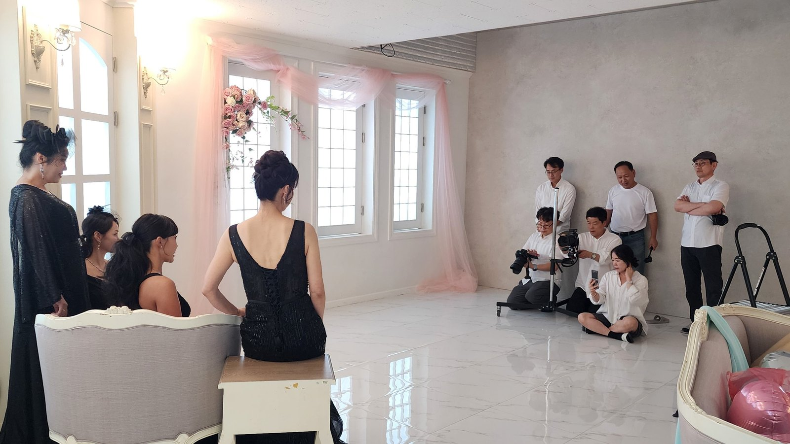
고른 사진은 보정을 거쳐 인화하고, 원목 액자에 넣습니다. 액자는 직접 만듭니다. 밝은 오크부터 짙은 월넛까지, 사진의 분위기에 맞춰 고르시면 됩니다. 우정사진은 긴 액자에 다섯이 나란히 들어간 사진을 많이들 고르십니다. 벽에 걸면 한 폭의 그림처럼 됩니다.
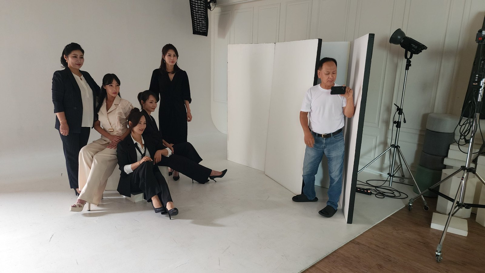
우정사진을 잘 찍는 방법을 하나만 꼽으라면, 컨셉을 나누는 일입니다. 같은 옷으로 스무 장 찍는 것보다, 다른 옷으로 다섯 장씩 찍는 편이 훨씬 풍성합니다. 보는 사람도 지루하지 않고, 찍는 사람도 지치지 않습니다. 그래서 상담 때 "무슨 옷이 있나요"보다 "어떤 분위기를 남기고 싶나요"를 먼저 여쭙습니다.
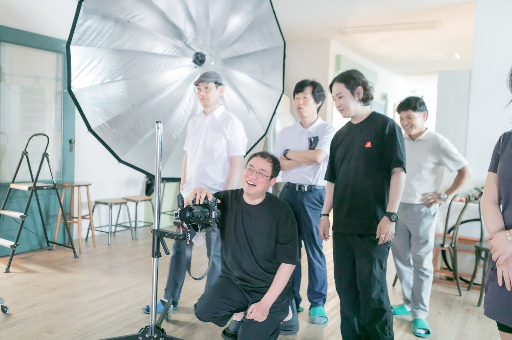
우정사진을 찍을 때 자주 나오는 질문이 있습니다. "얼굴이 크게 나오는 사진도 되나요?" 됩니다. 다섯이 나란히 선 단체 컷만 있으면 아쉽습니다. 얼굴을 가까이 담은 컷, 손을 잡은 컷, 웃다가 고개를 숙인 컷. 그런 사진이 액자 안에서 숨을 쉬게 합니다. 그래서 촬영 중간중간 클로즈업을 꼭 넣습니다.
사진을 고를 때는 표정을 먼저 보시길 권합니다. 옷이나 배경은 나중에 봐도 됩니다. 눈이 웃고 있는 사진은 오래 봐도 질리지 않습니다. 반대로 표정이 굳은 사진은 구도가 좋아도 금방 싫증이 납니다. 다섯이 함께 고를 때는 이 기준을 먼저 정해 두시면 싸우지 않습니다.
액자는 사진보다 오래 갑니다. 사진은 십 년마다 다시 인화할 수 있지만, 액자는 한 번 걸면 이십 년을 버팁니다. 그래서 원목을 직접 고르시길 권합니다. 나무 결을 눈으로 보고 손으로 만져 보시면, 어느 색이 우리 집 벽과 맞는지 금방 아시게 됩니다.
예약은 전화나 카카오톡 채널로 하시면 됩니다. 인원과 원하시는 분위기, 촬영 날짜를 알려 주시면 의상과 소품을 미리 준비해 둡니다. 우정사진은 특별한 날이 아니어도 됩니다. 친구들 생일이 겹치는 달, 혹은 그냥 마음이 맞는 날. 아무 이유 없이 모여도 사진은 남습니다.
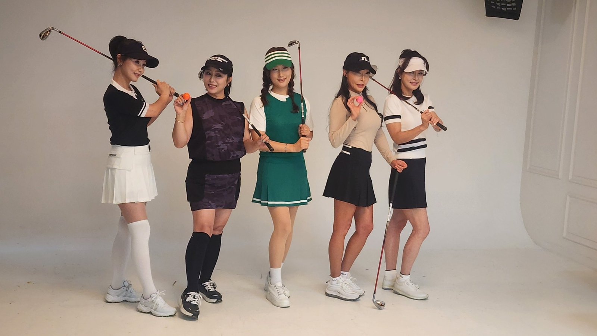
준비물은 많지 않습니다. 편한 신발, 그리고 입고 싶은 옷 한 벌. 나머지는 저희가 준비합니다. 다만 다섯이 함께 오시면 서로의 옷을 맞춰 입는 재미가 있으니, 미리 단톡방에서 색을 정해 오시면 훨씬 좋습니다. 같은 색 계열로 맞추면 사진이 한 편의 화보처럼 정리됩니다.
창원에서, 마산에서, 진해에서. 다섯이 모일 수 있는 날이면 언제든 오시면 됩니다. 사진을 잘 찍는 비법 같은 건 없습니다. 다만 그날의 웃음을 놓치지 않으려고 기다리는 사람이 있을 뿐입니다. 옷은 준비되어 있고, 조명은 켜 두고, 기다리고 있겠습니다. 사진 한 장이 십 년의 이야기를 담습니다.
자주 묻는 질문
Q. 우정사진은 몇 명이 찍을 수 있나요?
A. 몇 분인지 미리 알려 주시면 인원에 맞춰 구도와 조명을 준비합니다. 인원에 맞는 사진을 찍습니다.
Q. 옷은 몇 벌 준비해야 하나요?
A. 두세 벌을 권합니다. 체육복 같은 편한 옷, 드레스, 정장처럼 분위기가 다른 조합이면 사진이 훨씬 풍성해집니다. 촬영용 의상도 준비되어 있습니다.
Q. 촬영 시간은 얼마나 걸리나요?
A. 한 시간에서 한 시간 반 정도입니다. 다섯 분 이상이고 컨셉이 여러 개면 두 시간은 잡아 두시는 편이 좋습니다. 사진 고르는 시간은 따로 한 시간쯤 필요합니다.

오시는 곳
사랑이야기창원점
- 주소 경남 창원시 성산구 원이대로 652, 상남동 롯데빌딩 2층
- 전화 055-287-8022
- 영업시간 오전 10:00 ~ 오후 7:00
- 예약 전화 상담 · 카카오톡 채널
- 주차 건물 지하 주차장
김작가사진이야기 의령
- 주소 경남 의령군 궁류면 청정로 1188
- 전화 055-574-3706
- 영업시간 오전 10:00 ~ 오후 7:00
- 예약 전화 상담 · 카카오톡 채널
- 주차 전용 주차장
이 글에 한마디
댓글창을 준비하고 있습니다. 그동안 궁금한 점은 카카오채널로 남겨 주시면 바로 답변드립니다.
카카오채널로 한마디 남기기